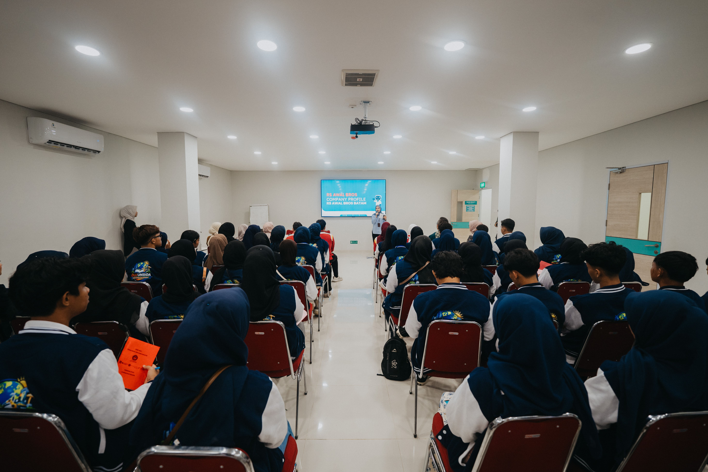
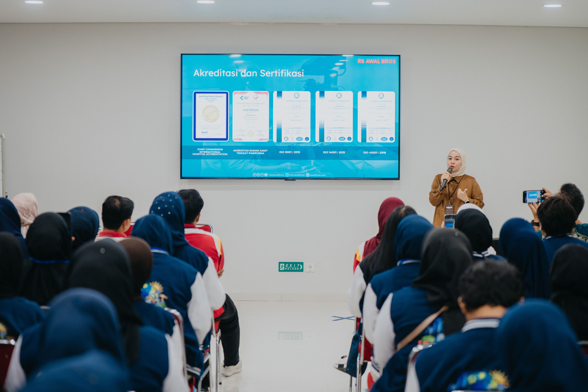
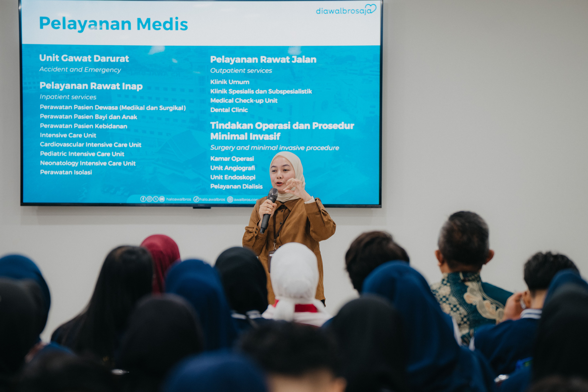

RS Awal Bros Batam

Bidang
Pelayanan Kesehatan - Rumah Sakit Swasta
Tanggal Kegiatan
19 Mei 2026
Visi
Menjadi jaringan rumah sakit pilihan utama yang memberikan pelayanan kesehatan berkualitas, profesional, dan berorientasi pada keselamatan pasien.
Misi
Memberikan pelayanan kesehatan yang bermutu melalui tenaga medis profesional, teknologi modern, serta pelayanan yang mengutamakan kepuasan dan keselamatan pasien.
Deskripsi
RS Awal Bros Batam merupakan rumah sakit swasta yang menyediakan berbagai layanan kesehatan mulai dari pelayanan rawat jalan, rawat inap, instalasi gawat darurat, laboratorium, radiologi, hingga pelayanan medis spesialis.
Melalui kegiatan Industrial Visit ini saya memperoleh gambaran mengenai sistem pelayanan kesehatan modern, pengelolaan rumah sakit, serta penerapan teknologi informasi dalam mendukung pelayanan kepada pasien.
Kegiatan ini memberikan pemahaman mengenai pentingnya profesionalisme, komunikasi, keselamatan pasien, serta standar operasional dalam dunia pelayanan kesehatan.
Hal yang Dipelajari
- Sistem pelayanan pasien dari proses registrasi hingga pelayanan medis.
- Pemanfaatan Sistem Informasi Rumah Sakit (Hospital Information System).
- Pentingnya keselamatan pasien (Patient Safety).
- Pengelolaan rekam medis secara digital.
- Penerapan standar pelayanan kesehatan dan SOP rumah sakit.
- Kolaborasi antara tenaga medis dan tenaga nonmedis.
- Pemanfaatan teknologi kesehatan dalam pelayanan pasien.
- Etika profesi dan komunikasi dalam pelayanan kesehatan.
Dokumentasi Kegiatan


